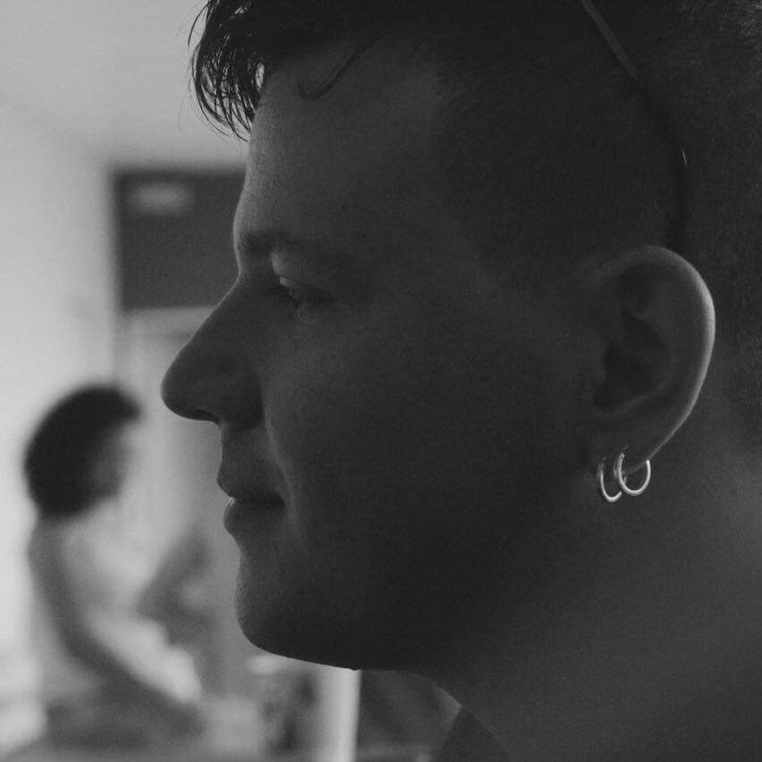

Rafael Mançan
Olá, me chamo Rafael Ricardo Camilo Mançan. Sou brasileiro, nascido na cidade de São Manuel - SP em 02 de julho de 1993.
Sou Tecnólogo em Informática para Negócios, formado pela FATEC de Botucatu.
| Tecnologia | Utilizei profissionalmente | Quanto tempo | XP |
|---|---|---|---|
| PHP | Sim | desde 2013 |
|
| Javascript | Sim | desde 2013 |
|
| Css | Sim | desde 2013 |
|
| Java | Sim | desde 2013 |
|
| VBScript | Sim | desde 2013 |
|
| Codeigniter | Sim | desde 2015 |
|
| MySQL | Sim | desde 2013 |
|
| Laravel | Sim | desde 2016 |
|
| Git | Sim | desde 2016 |
|
| ReactJS | Sim | desde 2018 |
|
- Meu primeiro contato com o mundo Web foi em 2009, criando Mockups no Photoshop como Freelancer.
-


- Comecei a programar profissionalmente em 2013 como estagiário na Embraer SA Onde tive como stack inicial: PHP, Javascript e MySQL.
-
Dando continuidade com o trabalho na
Embraer SA, fui
contratado como Analista Programador pela terceirizada
Sonda IT. Participando de
vários projetos:
- Desenvolvimento de Sistema para Gestão de Projetos;
- Desenvolvimento coparticipativo em um sistema para monitorar a solicitação e entrega de pedidos da fábrica;
- Desenvolvimento coparticipativo em um sistemas para gerenciar e disponibilizar todas informações referentes a auditorias e segurança;
- Desenvolvimento de um sistema para gerenciar a criação de roteiros para a manipulação de matérias-primas no SAP, utilizando PHP, MySQL, Java, Angular e VB;
- Projeto e implantação do Framework PHP Codeigniter;
- Projeto e implantação do Framework Javascript AngularJS.
-

-
Em 2015 me mudei para Curitiba, uma breve passagem que mudaria minha
vida. Inicialmente trabalhei na
EOX Tecnologia,
na época uma Startup e hoje uma grande empresa. Projetos em que
participei nessa breve passagem:
- Configuração e migração de repositórios legados SVN para Git;
- Implantação do gerenciador de repositórios GitLab em um servidor Amazon AWS;
- Refatoração de um sistema legado em Zend Framework;
- Implantação de AngularJS para melhorar o desempenho em algumas funcionalidades;
- Desenvolvimento coparticipativo da API para monitoramento de um sistema para Call Center;
- Automatização do processo de instalação e atualização dos sistemas.
- Integração com nosso sistema de gerenciamento de Callcenter com Salesforce.
-

-
Ainda em Curitiba fiz parte de uma das empresas que mais me
amadureceu como profissional. Lá trabalhei com excelentes
programadores, estes que até hoje possuo contato. A
Rentcars líder no mercado de
aluguel de veículos em todo o mundo. Minhas contribuições para esta
empresa foram:
- Integração com Webservices das Locadoras parceiras da empresa;
- Manutenção e suporte de sistema legado em Codeigniter;
- Criação da ferramenta para análise de Pricing/Competitividade utilizando o framework AngularJS;
- Criação de ferramentas para facilitar a manipulação de dados em massa via console em Laravel;
- Membro do time Comercial;
- Membro do time Relacionamento;
- Manutenção e suporte na ferramenta Freshdesk, realizando contato direto com suporte localizado na Índia e criando ferramentas que consomem a API disponibilizada dessa solução;
-

-
Em 2016 voltei para minha terra natal, com a experiência mais
importante que alguém se pode ter, a da vida. Nessa volta, tive
oportunidade de trabalhar na
Eversee Obras, remotamente. Participando ativamente dos projetos:
- Criação de Webservice;
- Manutenção, criação de funcionalidades e suporte de um sistema em Codeigniter + SQLServer;
- Implantação do GIT com Bitbucket para versionamento do código-fonte;
- Refatoração de trechos do código legado para melhoria de desempenho, seguindo as normas PSR;
- Rotinas para importação de arquivos e tratamentos de dados;
- Elaboração de scripts para trazer características similares ao Whatsapp para o chat do sistema;
- Sistema de comunicação, trazendo uma visão geral do sistema, abrindo chamados e mantendo a trilha de auditoria das soluções;
- Módulo de notificações do sistema, similar ao Facebook;
-
- Em 2017 voltei para empresa que me deu a primeira oportunidade no mercado. Atuando como frente de desenvolvimento para a Engenharia na unidade de Botucatu - SP.
-
Projetos desenvolvidos ou em desenvolvimento:
- Desenvolvimento de sistema unificado para gestão completa da área;
- Módulo para cadastrar conhecimento técnico, transformando em regras para serem utilizadas em automatização de processos produtivos;
- Criação de uma aplicação em nodejs para execução automática de scripts;
- Configuração de um serviço Gogs para armazenar e gerenciar repositórios Git da área;
- Elaboração de Interface em Python com SAP;
- Desenvolvimento de módulos utilizando ReactJS, MongoDB e NodeJS;
- Em andamento - Desenvolvimento de aplicativo mobile para Android e iOS em React Native;